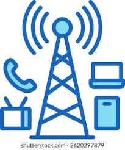

Introducción
La conversión analógico-digital permite transformar señales continuas en digitales. Lathi y Oppenheim destacan su importancia en sistemas modernos.
Desarrollo
Este proceso consta de muestreo, cuantización y codificación. Cada etapa afecta la calidad de la señal digital. Haykin explica que una correcta conversión garantiza una transmisión eficiente.

Conclusión
En conclusión, la conversión analógico-digital es esencial para integrar señales analógicas en sistemas digitales.